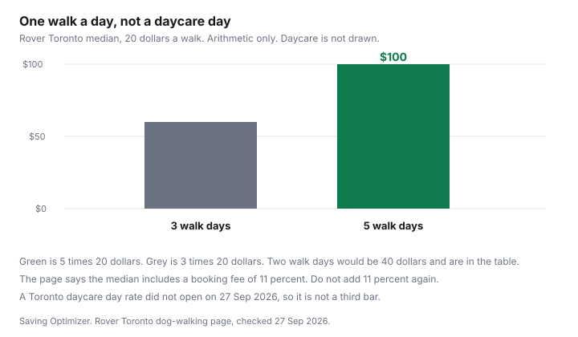

Pets · Canada
Dog Daycare vs Dog Walker in Canada: Weekly Cost for Working Owners
A workday is not a walk. Rover’s Toronto dog-walking page, opened 27 Sep 2026, sells a 30-minute walk around the neighbourhood and prints a median of $20 per walk. The same site’s Toronto daycare median did not load, so this page will not invent a day rate to make the comparison look finished. The weekly number is days times the rate on the quote in front of you. Pet-sitting platforms are an offer type, disclosed below. Education only.
Disclosure: Pet-sitting platform referral types are an offer type. Saving Optimizer may earn a commission if we later add a partner link. We do not currently claim a pet-sitting platform partnership. Rover is named because its Toronto walking page is the dated source of the median below, not because it is a recommended partner. A referral link would not change the multiplication.
Key takeaways
- Rover Toronto, opened 27 Sep 2026: median $20 per walk for one dog. Prices are estimates, may vary with the search, and include a booking fee of 11 percent. Do not add 11 percent on top of $20.
- The average on that page is $22.2 per walk as of July 2026. Sitters set their own rates. The product line is a 30-minute walk, not a workday.
- One walk on each of three days is 3 × $20 = $60. One walk on each of five days is 5 × $20 = $100. Two days would be $40. That is walker arithmetic only.
- A Toronto doggy-daycare median, a facility rate card, package prices, evaluation fees, vaccine lists, and late-pickup charges did not open. Those cells stay blank until you write the quote.
- The page’s Rover Guarantee is up to $25,000 for eligible veterinary care on bookings made there. It is not a private walker’s policy. The rest of the dog’s year is the cost-of-owning guide.
What each service provides, and which dogs suit each
The walking page describes a 30-minute walk in the neighbourhood. The dog is at home for the rest of the workday. Day care, on the same site’s service list, is described as time in the sitter’s home. A commercial daycare room, with a posted group size and a pickup clock, is a third product. This draft did not open a Toronto facility rate card, so it does not describe that room’s hours as if a webpage had printed them.
Which dogs suit which product is a question about the dog in the house, not a national average. A dog that can rest between a midday walk is not the same booking as a dog that cannot be left through a workday. Group size was not printed on the walking page. Ask how many dogs share the room, and what the provider does if your dog cannot cope. If the worry is illness rather than boredom, that question goes to a veterinarian. This page is not veterinary advice. Overnight care, which is a different unit than a walk, is the boarding and sitter guide.
Grooming, food, and the annual vet line are not inside a walk. They sit on the grooming comparison and the vet-bill guide. Do not subtract them from the walk to make daycare look cheaper, and do not add them twice if the daycare quote already includes a bath you will not use.
Weekly cost formula: days × rate, packages and memberships
Weekly walker cost, at one walk on each day you buy, is the number of days times the rate. At the Toronto median that is $40 for two days, $60 for three, and $100 for five. The average of $22.2 changes the five-day line to 5 × 22.2 = $111. Use the median or the average, not both, and use the quote if you have one. Two walks on the same day is your schedule, not a Rover requirement. If you book two, multiply by two. A second dog was not given a second median on the lines used here. The page prices one dog.
The 11 percent booking fee is already inside the median and the average. Adding it again turns $20 into $22.20 and invents a fee the page says is included. If a sitter’s profile shows a different total, the profile is the price for that booking. The median is a summary of the market on that page, dated in the way the page dated it, not a cap.
A package or a membership is cheaper only when its price is below days times the single rate on the same sheet. No package price opened, so this page prints no “packages save X percent.” Write the package, write days times the day rate, and subtract. If you cannot see both numbers, you do not have a saving yet. Park the weekly amount you do have in the way the sinking-fund guide uses for a bill that repeats. A walk every workday is that kind of bill.
Hidden costs: evaluations, vaccines, late pickup
Evaluations, trial days, vaccine rules, and late pickup are where a cheap day stops being the number on the advert. None of those dollars was on the Toronto walking page, and the daycare page did not load, so none is printed here. Ask, in writing, whether a meet-and-greet or a trial day is billed, what time pickup ends, and what the charge is after that time. A late fee you have not seen is not zero.
Vaccines are the same kind of blank. Ask for the facility’s list and match it to your vet record. Do not treat a forum list, or a boarding kennel’s list from another guide, as this daycare’s rule. Shot prices that a clinic has published are the vaccine guide. Holiday premiums for overnight kennels are the boarding guide. A statutory-holiday add-on for a daycare day was not opened, so it is a question on the quote, not a line this page can multiply.
Vetting providers: insurance, bonding, group sizes
The Toronto walking page says screened pet sitters have passed a third-party background check and show verified reviews. It also says every booking is backed by the Rover Guarantee, including up to $25,000 reimbursement for eligible veterinary care, plus support from the Rover team. Read that guarantee before you treat $25,000 as money that will arrive. Eligible care, exclusions, and the claim path are the platform’s terms. A walker you pay directly is not covered by a sentence on Rover’s page. Ask that walker for a certificate of insurance, and ask what the policy actually pays. Bonding was not described on the page opened, so this draft does not claim walkers are bonded.
No Canadian city business-licence fee for dog walkers was opened on 27 Sep 2026. Ask the municipality where the walker works whether a pet-care business needs a licence, and ask to see it if the answer is yes. Group size belongs in the same conversation. “We watch them” is not a number. If something does go wrong, the bill is the emergency-vet guide, not a reason to skip the questions before the first Monday.
Hybrid schedules and neighbour shares
A hybrid week is two quotes added together, not an average of “what people pay.” Daycare on the long office days plus one walk on the short days is daycare-days times the daycare rate, plus walk-days times the walk rate. Until the daycare rate is a number you were given, the daycare half of that sum is blank. Do not fill it with the $20 walk. A walk is not a day.
A neighbour share needs the same worksheet: which days, what you pay, and who is actually home. A favour with no price is not a $0 line if you are trading something else. No neighbour rate was opened. A dog that cannot be in a group may need training before daycare is even a quote. That decision, still without a class price, is the training-cost guide.
Worksheet
Enter the rate you were quoted. The illustrative walker row uses only the $20 Toronto median, one walk a day. The daycare cells in that row are blank on purpose.
| Line | Daycare | Walker, one walk that day |
|---|---|---|
| Rate you enter | Your quote per day | Your quote per walk |
| 2 days | 2 × your day rate | Illustrative: 2 × $20 = $40 |
| 3 days | 3 × your day rate | Illustrative: 3 × $20 = $60 |
| 5 days | 5 × your day rate | Illustrative: 5 × $20 = $100 |
| Evaluation, late pickup, holiday | Not opened. Write the quote. | Not opened. Write the quote. |
| Weekly total | Days × rate, plus the extras you were actually charged | Same method. Do not add 11 percent to the median. |

Sources & date stamps
- Rover, Toronto dog walking, opened 27 Sep 2026. Median $20 per walk for one dog. Average $22.2 per walk as of July 2026. Prices described as estimates that may vary and that include a booking fee of 11 percent. Service line: a 30-minute walk. Screened sitters and a third-party background check. Rover Guarantee up to $25,000 reimbursement for eligible veterinary care.
- Rover Toronto doggy day care did not return a rate on 27 Sep 2026. No facility daycare price, package, evaluation fee, vaccine list, or late-pickup charge was used. A non-Toronto daycare median was not substituted.
- The boarding URL named in the research brief is the overnight guide already on this site. It is not used here as a daycare day rate.
- No municipal business-licence fee for dog walkers was opened.
Frequently asked questions
Is dog daycare cheaper than a dog walker?
A Toronto daycare day rate did not open on 27 Sep 2026, so this page cannot say daycare is cheaper. Rover’s Toronto walking page prints a median of $20 per walk for a 30-minute walk, and that price already includes a booking fee of 11 percent. Three of those walks are $60 and five are $100. Put the daycare quote beside that arithmetic for the same days, after you know what a day includes.
How much does a dog walker cost?
On the Rover Toronto dog-walking page opened 27 Sep 2026, the median is $20 per walk for one dog, and the average is $22.2 per walk as of July 2026. The page says sitters set their own rates and that the price you see includes a booking fee of 11 percent, so do not add 11 percent again. A walker hired off that page was not priced here. Multiply only after the quote is written down.
Do daycare packages save money?
A package saves money only when its price is lower than the number of days times the provider’s own single-day rate. No daycare package price was on a page opened for this draft, so no saving is printed. Write both numbers in the worksheet before you call the package a discount. If the package is higher, it is the more expensive row.
What vaccines does daycare require?
No daycare vaccine list was on a page opened on 27 Sep 2026. Ask the facility for the written list and compare it with the record from your veterinarian. A missing line is a reason to pause the booking. Published shot prices, where a clinic has printed them, are the vaccine guide, and that guide is not a daycare’s rule.
How do I vet a dog walker?
On the Rover Toronto page, screened sitters have passed a third-party background check, and the Rover Guarantee includes up to $25,000 reimbursement for eligible veterinary care. That figure is the platform’s program, not a private walker’s insurance policy, and the terms are the page’s, not a promise from this site. Off the platform, ask for proof of insurance and whether the city licences the business. No municipal walker-licence fee was opened for this draft.